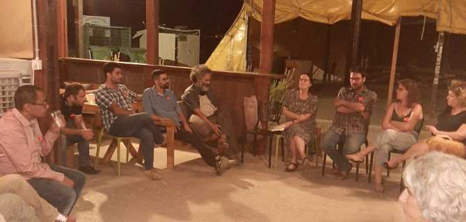

The Mandel Program for Cultural Leadership in the Negev launched the studies of Cohort 2 with an evening event held in the heart of the Negev, on Kibbutz Tlalim, between Rosh Hashanah and Yom Kippur. The fellows of Cohort 2 were joined by the graduates of Cohort 1, as well as graduates of the Mandel Program for Regional Leadership in Yeruham and Ramat Hanegev, for a fascinating meeting with movie director and screenwriter Ari Folman. Folman’s films, which include Waltz with Bashir, Saint Clara, and The Congress, have won prizes and acclaim throughout the world.
Among other topics, the conversation with Ari Folman examined sources of inspiration for artists and explored artists’ interaction with and attitudes toward their audiences. The participants also discussed Folman’s forthcoming movie, Where is Anne Frank? During the discussion, Folman emphasized the importance of an artist's loyalty to his or her work, based on the understanding that self-censorship is the harshest censorship of all.
Following the talk with Folman, there was a session in which members of the three groups of fellows and graduates got to know each other. Dr. Adi Nir-Sagi, director of the Mandel Center for Leadership in the Negev, led a discussion that explored the connections between community, audience, leadership, and artistic work.

{kind=link}